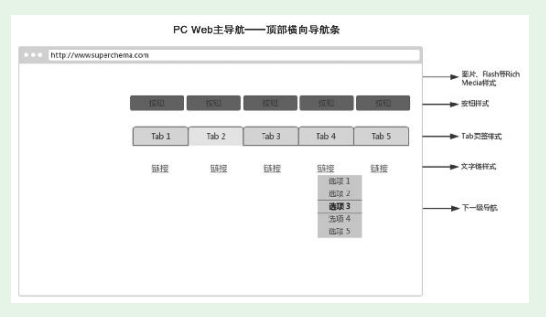
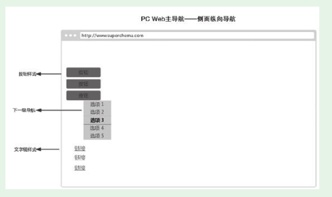
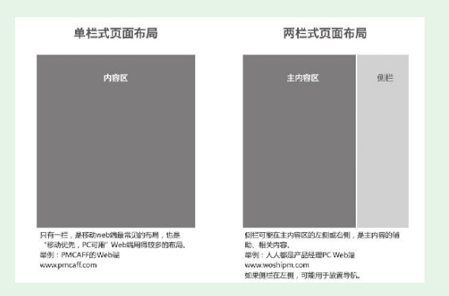
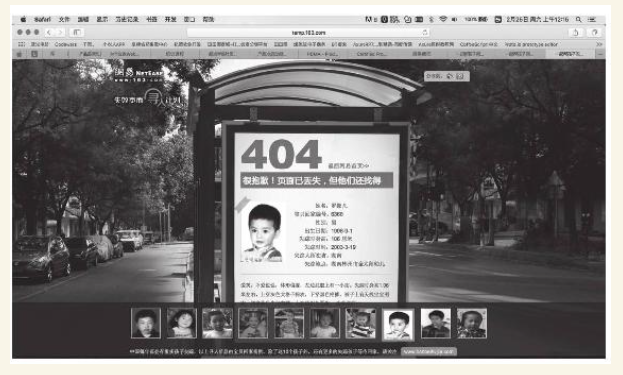

1. 第2节 PC Web端规划的要点
1.1. 传统的PC Web全局导航
- 手机Web向App学习导航方式，然后PC Web又向手机Web学习导航方式
1.1.1. 顶部横向导航

（1）位于Web页面顶部，整体横向排列，处于最易被注意到的位置，用户基本都会注意到。 （2）基本样式有四种：文字链、Tab（页签）、按钮、图片和其他富媒体形式。 （3）一级导航项目可以展开。
- 原型工具mockplus的PC Web端的顶部导航

- 陆金所的PC Web导航
- 这个二级导航项的排列方式没有用通常的纵向列表，而是用了横向列表。这样做有一个好处，它对下面的内容遮挡少
1.1.2. 侧边纵向导航
- 展开的下级导航栏可以持久存在，而且多个、多级展开项可以同时持久存在。
- 运营人员使用的运营系统，PC Web普遍使用这种导航方式。因为侧边纵向导航便于展开，可以容纳非常多的操作项，而这往往是运营系统的特点。

1.1.3. 纵横结合+搜索辅助
- 主导航在左侧边，列出了所有的商品类别；上部横向导航条，列出了几个主推的分类；再加上顶部的搜索栏。
1.1.4. Web全局导航的辅助——面包屑
- 小孩子出门时，沿途撒下面包屑。迷路后，跟着先前洒下的面包屑，就能顺利地找到回家的路
- 京东图书，“图书>管理>商务实务>中信出版>刷新：重新发现商业与未来”就是典型的面包屑

看典型面包屑的两个主要作用： （1）指示位置的作用。
（2）在指示位置作用的同时，面包屑还提供了便利的跳转功能。
产品新人在掌握面包屑导航的时候，要注意以下问题： （1）面包屑是全局导航的辅助，而且不是必需的。
（2）不要将当前页链接加到面包屑中。
（3）面包屑内容要有合适的大小和间隔，并且使用简单、统一的连接符。
面包屑可以通过适当的规划，实现和主导航的有机融合。

1.2. PC Web页面整体布局的规划
- 视觉美观和页面内容中找到一个平衡点。按照分栏方式的不同，可以将网站的界面布局分为单栏式、两栏式和三栏式。
1.2.1. 单栏式布局
- 页面重点突出，方便用户直达最重要的功能。同时，排版方式受到局限，页面可承载的信息量小。
- 如搜索引擎首页、表单填写页面。

1.2.2. 两栏式布局
1.2.3. 三栏式布局

1.2.4. 随手练习：
除了搜索引擎首页，你还见过哪个PC Web网站的首页采用了单栏式布局？cnki
1.2.5. 对基本布局的混合、嵌套应用
- 纵向
1.3. PC浏览器兼容问题及其对策
1.3.1. 浏览器兼容问题
- 同样的代码，在不同浏览器上可能表现为不同的效果，这就是浏览器兼容问题。对这个问题理解最深的是Web前端开发人员，产品新人可以向他们请教。
- 浏览器兼容问题大致可以分为两类：显示兼容性问题和功能兼容性问题。
- 这个属性Chrome、IE9都支持，但IE8却不支持。如果产品人规划的某个功能，技术实现时使用了textContent属性，用IE8的用户就不能正常使用这个功能。
- 产品新人可以访问百度流量研究院（http://tongji.baidu.com/data/browser），查看最新的国内PC浏览器的版本分布情况。
1.3.2. 浏览器兼容的对策
（1）根据所做产品的用户特点，选定兼容的浏览器列表
对于已经上线运营一段时间的Web端，可以从服务器获取用户的浏览器信息。
有些产品的Web端可能对浏览器的限定更加明确——指定一种浏览器，除这种浏览器以外的，或许可以使用但不保证效果。
- 小结一下，目前主流的浏览器兼容策略有四个策略：
·最大兼容。包括“古老”浏览器（主要是指IE6、IE7、IE8）和主要的现代浏览器（IE9+、Chrome等）。
·较大兼容。IE8和主要的现代浏览器。
·兼容主要的现代浏览器。
·只确保一种主要的现代浏览器，通常是Chrome。
- 实战中，大多数产品采用较大兼容策略和兼容现代浏览器策略就能满足需要。
（2）对兼容列表中的浏览器，向前端开发人员系统了解他们的兼容问题，在规划阶段就尽量回避这些问题
（3）提交Web端规划后，主动和Web前端开发人员沟通，了解涉及的兼容性问题。对部分问题可以对规划略作调整，再次回避一些兼容性问题，减少开发量
1.3.3. PC Web规划的其他考虑
404页面
- 知乎、搜狐畅游的404页面

- （1）要告诉用户“您访问的地址不存在”或“您请求的网页服务器没有找到”。
（2）可以结合产品和用户特点，规划相应的其他文案或配图。
（3）为用户提供1～2个去向，用户不需要关闭这个404页面，单击就能跳转到其他页面

- 网易更是利用404页面从事寻人公益活动，将异常状态从坏事变成了好事。

- 对SEO的考虑
SEO是Search Engine Optimization（搜索引擎优化）的首字母缩写。
产品的Web端能出现在搜索结果中，而且最好排名靠前，这样可以获得大量用户
（1）内容尽量文字化，尤其是导航。搜索引擎只认文字，不认图
（2）HTML标签语义化、TDK标签、Tag标签优化，这同样是为了便于搜索引擎理解。
（3）专门提供站点地图——XML地图、HTML地图。
（4）网站URL的优化，尽量用静态、少层级、有规律、简短的URL。
建议新人去百度搜索资源平台（HTTPs：//ziyuan.baidu.com）系统学习SEO知识。